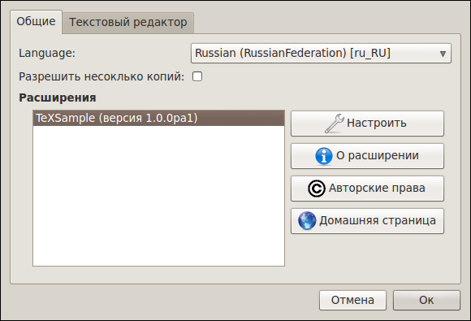
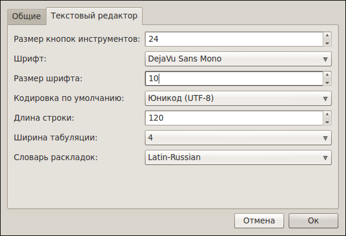

[Назад: 1. Начало работы]
[Далее: 1.2 Создание документа]
Настройки
Для более удобной работы с редактором предлагается несколько настроек.
Они разделены на две секции: Общие и Текстовый редактор.
Общие

Language (Язык). Отвечает за язык интерфейса всего приложения.
Разрешить несколько копий. Выбор этой опции позволяет открывать несколько окон редактора одновременно.
Если же опция не выбрана, то все файлы будут открываться в одном окне.
Расширения. Эта область отображается только в том случае,
если у приложения имеются подключаемые расширения (плагины).
Вы можете выбрать нужный плагин и посмотреть информацию о нем,
или настроить его при помощи соответствующих кнопок справа.
Текстовый редактор

Размер кнопок инструментов. Позволяет выбрать размер кнопок на панели инструментов.
Для нетбуков и других устройств с маленьким разрешением может быть удобно использовать меньший размер кнопок,
в то время как для планшетных устройств удобнее будет использовать большие кнопки.
Значение может меняться от 16 до 48 (измеряется в точках экрана).
Шрифт. Задает начертание символов (например, Courier New Roman, DejaVu Sans Mono и т.д.) для редактора.
Доступны только так называемые моноширинные шрифты, то есть те, у которых ширина всех символов одинакова.
Это ограничение необходимо для корректной работы в режиме блоков.
Выберите тот шрифт, который на ваш взгляд выглядит приятнее. Это повысит удобство работы.
Размер шрифта. Меняет размер символов. Эта опция относится только к тексту документов.
Для экономии места на экране можно установить размер поменьше,
а если символы выглядят слишком мелкими - напротив, побольше.
Значение может меняться от 6 до 20 пт.
Кодировка по умолчанию. Позволяет выбрать, в какой кодировке открывать документы.
Выберите ту кодировку, в которой сохранено большинство файлов, с которыми вы работаете.
Помните, что файл всегда можно открыть заново в другой кодировке.
Рекомендуется по возможности сохранять файлы в кодировке UTF-8 (Юникод). Это считается хорошим тоном.
Длина строки. В TeX Creator используются строки фиксированной длины
(недостающие символы в конце строки заменяются пробелмаи, а при сохранении на диск эти пробелы убираются).
Такой подход позволяет удобно работать в режиме блоков,
а также устанавливать курсор в любое место строки без необходимости вручную вводить для этого символы пробелов.
Хорошим тоном считается не превышать длину строки в 120 символов, однако это не является строгим ограничением.
Можно выбрать длину строки от 80 до 500 символов. Однако, помните, что для больших документов (несколько тысяч строк)
потребление оперативной памяти значительно возрастает с увеличением длины строки.
Если в открываемом документе окажутся строки с длиной, превышающей установленную,
то они будут разделены на несколько строк (по возможности - в тех местах, где стоят пробелы).
Будет показан специальный диалог, позволяющий быстро пройтись по разделенным строкам и
при необходимости внести исправления.
Ширина табуляции. Указывает, сколько символов пробела следует вставлять вместо символа табуляции.
В TeX Creator символы табуляции не используются, они всегда заменяются пробелами - как при нажатии клавиши Tab,
так и при открытии файла. Это необходимо для корректной работы в режиме блоков.
Словарь раскладок. Позволяет выбрать пару раскладок для действия
Переключить раскладку выделенного текста.
Это действие удобно использовать, если вы случайно набрали текст в неправильной раскладке.
См. Редактирование: Переключение раскладки текста.
[Назад: 1. Начало работы]
[Далее: 1.2 Создание документа]